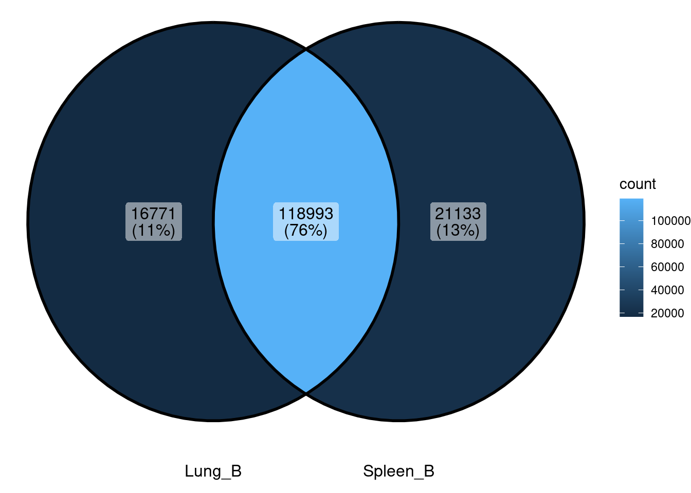
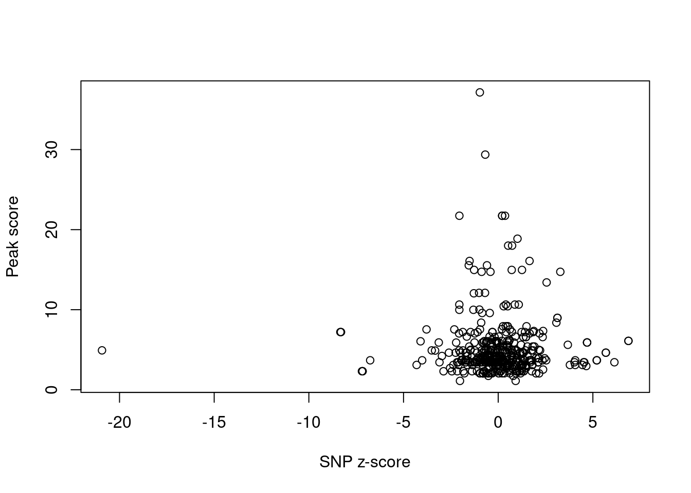
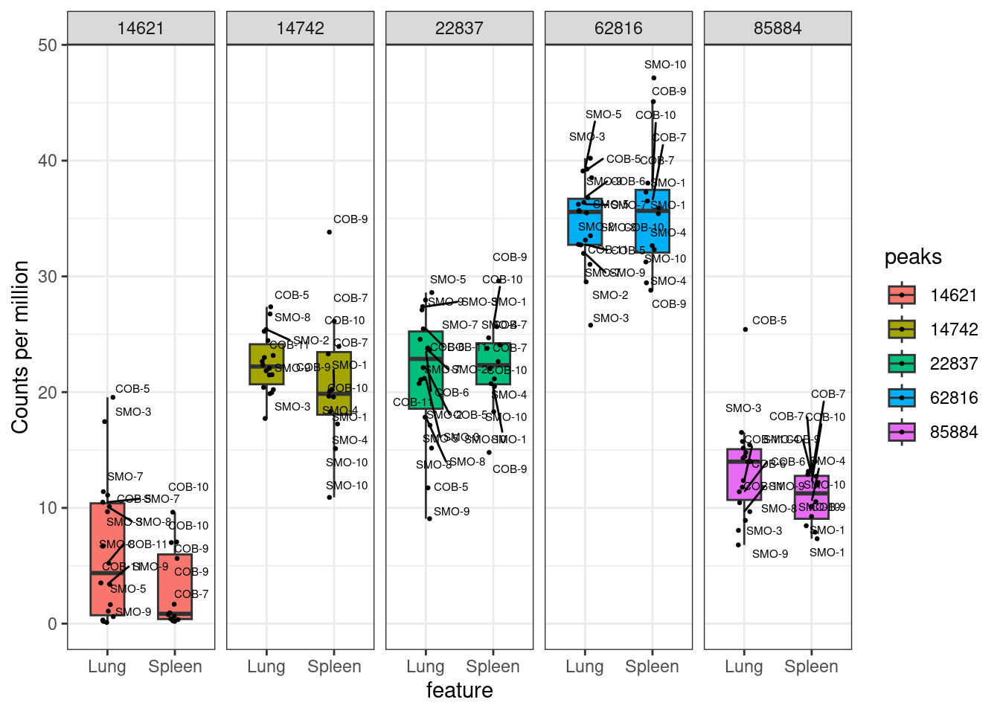

understand_lung_specific_peaks
2025-04-22
Last updated: 2025-04-23
Checks: 7 0
Knit directory: lung_lymph_scMultiomics/
This reproducible R Markdown analysis was created with workflowr (version 1.7.1). The Checks tab describes the reproducibility checks that were applied when the results were created. The Past versions tab lists the development history.
Great! Since the R Markdown file has been committed to the Git repository, you know the exact version of the code that produced these results.
Great job! The global environment was empty. Objects defined in the global environment can affect the analysis in your R Markdown file in unknown ways. For reproduciblity it’s best to always run the code in an empty environment.
The command set.seed(20221229) was run prior to running
the code in the R Markdown file. Setting a seed ensures that any results
that rely on randomness, e.g. subsampling or permutations, are
reproducible.
Great job! Recording the operating system, R version, and package versions is critical for reproducibility.
Nice! There were no cached chunks for this analysis, so you can be confident that you successfully produced the results during this run.
Great job! Using relative paths to the files within your workflowr project makes it easier to run your code on other machines.
Great! You are using Git for version control. Tracking code development and connecting the code version to the results is critical for reproducibility.
The results in this page were generated with repository version ffabeb8. See the Past versions tab to see a history of the changes made to the R Markdown and HTML files.
Note that you need to be careful to ensure that all relevant files for
the analysis have been committed to Git prior to generating the results
(you can use wflow_publish or
wflow_git_commit). workflowr only checks the R Markdown
file, but you know if there are other scripts or data files that it
depends on. Below is the status of the Git repository when the results
were generated:
Ignored files:
Ignored: analysis/.RData
Ignored: analysis/.Rhistory
Untracked files:
Untracked: ArchRLogs/
Untracked: Rplots.pdf
Untracked: analysis/.ipynb_checkpoints/
Untracked: analysis/ArchRLogs/
Untracked: analysis/GOBP_B_CELL_ACTIVATION_INVOLVED_IN_IMMUNE_RESPONSE.v2024.1.Hs.gmt
Untracked: analysis/Rplots.pdf
Untracked: analysis/cross_tissue_DE_u19_k10_fastTopics.Rmd
Untracked: analysis/differential_peak_analysis.Rmd
Untracked: analysis/full_atac_h2g_enrichment.Rmd
Untracked: analysis/identify_T_subsets.Rmd
Untracked: analysis/identify_batch_effects_full_atac_k8.Rmd
Untracked: analysis/linking_lung_celltype_OCRs_with_asthma_genetics_archive.Rmd
Untracked: analysis/run_fastTopics.R
Untracked: analysis/run_fastTopics_lungOnly.R
Untracked: analysis/test.pdf
Untracked: analysis/test_GO_enrichment.ipynb
Untracked: analysis/test_differential_accessibility_MAST.ipynb
Untracked: analysis/u19_atac_fastTopics.Rmd
Untracked: analysis/u19_full_atac_fastTopics.Rmd
Untracked: analysis/u19_full_atac_fastTopics_k10.Rmd
Untracked: analysis/u19_full_atac_fastTopics_k8.Rmd
Untracked: analysis/u19_lung_atac_fastTopics_no_correction.Rmd
Untracked: analysis/u19_regulon_enrichment.Rmd
Untracked: analysis/ukb-a-446.log
Untracked: analysis/ukb-a-446_GO_immune.log
Untracked: code/.ipynb_checkpoints/
Untracked: code/compute_pancreas_factors.R
Untracked: code/link_variant_to_function.R
Untracked: code/make_plots.R
Untracked: code/run_GO_enrichment.R
Untracked: code/run_MAST.R
Untracked: code/run_fastTopics.R
Untracked: code/run_magma.sh
Untracked: code/run_magma/
Untracked: code/run_topic_DE_analysis.R
Untracked: ctwas_m6a_joint_m6a_PIP_0.8_genes.txt
Untracked: data/CRE_0_asthma_fine-mapping_summary.RDS
Untracked: data/CRE_0_asthma_fine-mapping_summary.RData
Untracked: data/CRE_0_asthma_fine-mapping_summary.csv
Untracked: data/CRE_0_asthma_fine-mapping_summary.txt
Untracked: data/DA_peaks_Tsub_vs_others.RDS
Untracked: data/DA_peaks_by_cell_type.RDS
Untracked: data/Tsuo2022_meta_analysis_asthma_risk_genes.csv
Untracked: data/annotated_scRNA_data.RDS
Untracked: output/annotation_reference.txt
Untracked: output/cross_celltypes_edgeR.RDS
Untracked: output/fastTopics
Untracked: output/homer
Untracked: output/ldsc_enrichment
Untracked: output/lung_Th17_dispersion_plot.pdf
Untracked: output/lung_immune_atac_peaks_high_ePIPs.RDS
Untracked: output/lung_specific_p2g_CD4_T.txt
Untracked: output/lung_specific_p2g_CD4_T_all.txt
Untracked: output/lung_specific_p2g_CD8.CD4.txt
Untracked: output/lung_specific_p2g_CD8.CD4_T.txt
Untracked: output/lung_specific_p2g_CD8_T.txt
Untracked: output/lung_specific_p2g_GO.RDS
Untracked: output/lung_specific_p2g_Memory_B.txt
Untracked: output/lung_specific_p2g_NK.txt
Untracked: output/lung_specific_p2g_Naive_B.txt
Untracked: output/lung_specific_p2g_Treg.txt
Untracked: output/lung_specific_peak2genes.RDS
Untracked: output/positions.bed
Untracked: output/u19_analysis
Untracked: output/u19_output
Untracked: test.pdf
Unstaged changes:
Modified: analysis/U19_motif_analysis.ipynb
Modified: analysis/cross_tissue_DE_u19_fastTopics.Rmd
Modified: analysis/differential_peak_analysis_u19.Rmd
Modified: analysis/gene_set_analysis_for_RNA_topics.Rmd
Modified: analysis/h2g_enrichment_u19.Rmd
Modified: analysis/identify_batch_effects_full_atac.Rmd
Modified: analysis/identify_batch_effects_multiomics.Rmd
Modified: analysis/identify_regulatory_programs_u19_GRN.Rmd
Modified: analysis/linking_lung_celltype_OCRs_with_asthma_genetics.Rmd
Modified: analysis/rank_TFs_from_pairwise_comparison.ipynb
Deleted: analysis/test_magma.Rmd
Modified: analysis/u19_h2g_enrichment.Rmd
Modified: analysis/u19_lung_atac_fastTopics.Rmd
Modified: analysis/variants_to_function_u19.Rmd
Deleted: code/run_fastTopic.R
Deleted: lung_immune_fine_mapping.Rproj
Note that any generated files, e.g. HTML, png, CSS, etc., are not included in this status report because it is ok for generated content to have uncommitted changes.
These are the previous versions of the repository in which changes were
made to the R Markdown
(analysis/lung_specific_peaks_vs_DA_analyses.Rmd) and HTML
(docs/lung_specific_peaks_vs_DA_analyses.html) files. If
you’ve configured a remote Git repository (see
?wflow_git_remote), click on the hyperlinks in the table
below to view the files as they were in that past version.
| File | Version | Author | Date | Message |
|---|---|---|---|---|
| Rmd | ffabeb8 | Jing Gu | 2025-04-23 | bias in peak calling |
Objectives
The objective is to understand why lung-specific peaks in enrichment results do not show differential accessibility. What drives the differences in heritabiltiy enrichment between tissues? We have several hypotheses as below.
- Peak calling may be too conservative for spleens
- Less variability in pooling samples to call peaks
- Peaks do not pass FDR threshold with multiple testing burdens
We will use some positive controls to test these hypotheses: 1) Lung peaks with high peak calling scores 2) Lung peaks that contain GWAS SNPs for childhood-onset asthma with high z scores
Summarizing peaks uniquely detected in each tissue
load("output/u19_output/peakCalling/peaks_called_by_TissueCellType.RData")
union_peaks <- proj@peakSet
d_main <- list()
d_main[["Lung_NK"]] <- d_major$Lung_NK
d_main[["Spleen_NK"]] <- d_major$Spleen_NK
d_main[["Lung_B"]] <-
unique(GRanges(
as.character(c(d_major[["Lung_Naive_B"]],
d_major[["Lung_Memory_B"]]))
))
d_main[["Spleen_B"]] <-
unique(GRanges(
as.character(c(d_major[["Spleen_Naive_B"]],
d_major[["Spleen_Memory_B"]]))
))ggVennDiagram(
lapply(d_main[c(1,2)], as.character)) +
coord_flip()
ggVennDiagram(
lapply(d_main[c(3,4)], as.character)) +
coord_flip() Out of 168K peaks unique to lung B cells, we focused on ~7K peaks with the highest normalized p-values in B cells compared to other cell types.
Preparing positive control peaks
Set 1: top 5 lung-specific peaks with high peak calling quality
Hits object with 0 hits and 0 metadata columns:
queryHits subjectHits
<integer> <integer>
-------
queryLength: 16771 / subjectLength: 140126GRanges object with 5 ranges and 13 metadata columns:
seqnames ranges strand | score
<Rle> <IRanges> <Rle> | <numeric>
Lung_Memory_B chr4 73069096-73069596 * | 74.8021
Lung_Memory_B chr1 153966992-153967492 * | 71.2846
Lung_Memory_B chr1 228140414-228140914 * | 63.1717
Lung_Memory_B chr6 36679727-36680227 * | 57.4205
Lung_Memory_B chr1 153617517-153618017 * | 48.6860
replicateScoreQuantile groupScoreQuantile Reproducibility
<numeric> <numeric> <numeric>
Lung_Memory_B 0.889 0.873 3
Lung_Memory_B 0.867 0.847 3
Lung_Memory_B 0.843 0.818 4
Lung_Memory_B 0.743 0.695 5
Lung_Memory_B 0.829 0.800 3
GroupReplicate distToGeneStart nearestGene peakType
<character> <integer> <character> <character>
Lung_Memory_B Lung_Memory_B._.COB-5 408 COX18 Exonic
Lung_Memory_B Lung_Memory_B._.COB-6 291 CREB3L4 Promoter
Lung_Memory_B Lung_Memory_B._.SMO-7 701 GUK1 Intronic
Lung_Memory_B Lung_Memory_B._.SMO-2 3516 CDKN1A Intronic
Lung_Memory_B Lung_Memory_B._.COB-5 780 S100A14 Promoter
distToTSS nearestTSS GC idx N
<integer> <character> <numeric> <integer> <numeric>
Lung_Memory_B 345 uc011cbc.2 0.5908 3863 0
Lung_Memory_B 291 uc057lfa.1 0.5449 14742 0
Lung_Memory_B 331 uc057qdb.1 0.6926 22837 0
Lung_Memory_B 1205 uc063oeu.1 0.6647 5635 0
Lung_Memory_B 780 uc001fce.4 0.5968 14621 0
-------
seqinfo: 23 sequences from an unspecified genome; no seqlengthsComparing zscores for SNPs within peaks vs. peak scores
Peak scores were defined as -log10(p-value) output from MACS2 normalized by sequencing depth across cell types.
We found ~400 out of 168K peaks contain COA GWAS SNPs and their z-scores mostly center around zero. For those with more deviated z scores, they tend to locate in peaks with low quality.
Comparing lung and spleen specific peaks, we found more COA GWAS SNPs in lung peaks have z scores deviated from zero.
# get a set of lung-specific peaks with SNPs in high z scores
f <- readRDS("~/cluster/projects/u19_multiomics/data/coa_gp3_finemapping_gwas_L5.rds")
f_gr <- GRanges(seqnames = paste0("chr", f$chr),
IRanges(start = f$pos,
end = f$pos+1))
mcols(f_gr) <- f[, -4:-1]
#liftOver to hg38
ch=import.chain("~/resources/genomes/chain_files/hg19ToHg38.over.chain")
seqlevelsStyle(f_gr) <- "UCSC"
f_hg38_gr<- unlist(liftOver(f_gr, ch))
overlapped <- mergeByOverlaps(gr_B, f_hg38_gr)
overlapped_sp <- mergeByOverlaps(spleenB, f_hg38_gr)
gginput <- rbind(data.frame(type = "LungOnly", score = overlapped$zscore),
data.frame(type = "SpleenOnly", score = overlapped_sp$zscore))
plot(sort(overlapped$zscore),
main = "GWAS SNPs in specific peaks to lung (black) or spleen (red)",
ylab = "Sorted Z scores") +
points(sort(overlapped_sp$zscore), col = "red")
integer(0)plot(y = overlapped$score,
x = overlapped$zscore,
ylab = "Peak score",
xlab = "SNP z-score")
Set 2: top 50 peaks ranked by absolute z-scores (|Z| > 2.3) of asthma GWAS SNPs within peaks
pset2 <- overlapped[order(abs(overlapped$zscore), decreasing = TRUE)[1:50], ]$gr_B
head(pset2)GRanges object with 6 ranges and 13 metadata columns:
seqnames ranges strand | score
<Rle> <IRanges> <Rle> | <numeric>
Lung_Naive_B chr17 39894697-39895197 * | 4.92238
Lung_Memory_B chr2 241759819-241760319 * | 7.20963
Lung_Memory_B chr2 241759819-241760319 * | 7.20963
Lung_Naive_B chr8 80376294-80376794 * | 2.31590
Lung_Naive_B chr8 80376294-80376794 * | 2.31590
Lung_Naive_B chr8 80376294-80376794 * | 2.31590
replicateScoreQuantile groupScoreQuantile Reproducibility
<numeric> <numeric> <numeric>
Lung_Naive_B 0.154 0.039 2
Lung_Memory_B 0.333 0.199 2
Lung_Memory_B 0.333 0.199 2
Lung_Naive_B 0.067 0.019 2
Lung_Naive_B 0.067 0.019 2
Lung_Naive_B 0.067 0.019 2
GroupReplicate distToGeneStart nearestGene peakType
<character> <integer> <character> <character>
Lung_Naive_B Lung_Naive_B._.SMO-2 24906 GSDMB Distal
Lung_Memory_B Lung_Memory_B._.SMO-2 16755 GAL3ST2 Intronic
Lung_Memory_B Lung_Memory_B._.SMO-2 16755 GAL3ST2 Intronic
Lung_Naive_B Lung_Naive_B._.COB-11 109074 ZBTB10 Distal
Lung_Naive_B Lung_Naive_B._.COB-11 109074 ZBTB10 Distal
Lung_Naive_B Lung_Naive_B._.COB-11 109074 ZBTB10 Distal
distToTSS nearestTSS GC idx N
<integer> <character> <numeric> <integer> <numeric>
Lung_Naive_B 10990 uc060eul.1 0.4092 5676 0
Lung_Memory_B 4328 uc061uud.1 0.5329 19166 0
Lung_Memory_B 4328 uc061uud.1 0.5329 19166 0
Lung_Naive_B 28971 uc064nyf.1 0.4032 5281 0
Lung_Naive_B 28971 uc064nyf.1 0.4032 5281 0
Lung_Naive_B 28971 uc064nyf.1 0.4032 5281 0
-------
seqinfo: 23 sequences from an unspecified genome; no seqlengthsChecking differential results for the selected peaks
Set 1
From the table of differential peak analyses, we see the five peaks only called in lung B cells with high quality do not have large fold change compared with spleen.
qlf <- readRDS("output/u19_output/diff_peak_analysis/cross_tissue_B_edgeR.RDS")
print("Positive set 1:")[1] "Positive set 1:"top5_out <- qlf$table[na.omit(match(findOverlaps(pset1, union_peaks)@to, rownames(qlf$table))), ]Warning: package 'limma' was built under R version 4.3.1top5_out logFC logCPM F PValue
62816 -0.041441023 5.143313 0.332383890 0.79223709
14742 0.168538507 4.445024 3.166543964 0.08326005
22837 -0.008858412 4.484598 0.006249968 0.93740749
85884 0.293382484 3.643101 4.797172140 0.03479254
14621 1.758545986 2.058012 4.610849044 0.04054034We further looked into how read counts in CPMs differ in those peaks across samples for each tissue. You can see there are reads mapped to those peak regions in spleen, but somehow they were not called as peaks.
y <- readRDS("output/u19_output/diff_peak_analysis/u19_B_DGEList_edgeR.RDS")
peak_boxplot(y, peak_idx = rownames(top5_out)) Set 2
Similar results were seen in the Set 2 peak.
print("Positive set 2:")[1] "Positive set 2:"qlf$table[na.omit(match(findOverlaps(pset2, union_peaks)@to, rownames(qlf$table))), ] logFC logCPM F PValue
205004 -0.0291875 2.162244 0.02736533 0.8694975peak_boxplot(y, peak_idx = "205004")
Review peak calling process
ArchR makes pseudo-bulk replicates by bootstrapping and then call peaks with MACS2. It requires at least 2 pseudo-bulk replicates to have a peak call at each locus and the numeric significance cutoff for peaks to be at least 0.1. There could be bias from pseudo-bulk replicates that somehow calls many tissue specific peaks that are false positives.
sessionInfo()R version 4.2.0 (2022-04-22)
Platform: x86_64-pc-linux-gnu (64-bit)
Running under: CentOS Linux 7 (Core)
Matrix products: default
BLAS/LAPACK: /software/openblas-0.3.13-el7-x86_64/lib/libopenblas_haswellp-r0.3.13.so
locale:
[1] LC_CTYPE=en_US.UTF-8 LC_NUMERIC=C LC_TIME=C
[4] LC_COLLATE=C LC_MONETARY=C LC_MESSAGES=C
[7] LC_PAPER=C LC_NAME=C LC_ADDRESS=C
[10] LC_TELEPHONE=C LC_MEASUREMENT=C LC_IDENTIFICATION=C
attached base packages:
[1] stats4 grid stats graphics grDevices utils datasets
[8] methods base
other attached packages:
[1] edgeR_3.40.2
[2] limma_3.58.0
[3] ggrepel_0.9.6
[4] tidyr_1.3.1
[5] dplyr_1.1.4
[6] liftOver_1.22.0
[7] Homo.sapiens_1.3.1
[8] TxDb.Hsapiens.UCSC.hg19.knownGene_3.2.2
[9] org.Hs.eg.db_3.16.0
[10] GO.db_3.16.0
[11] OrganismDbi_1.40.0
[12] GenomicFeatures_1.50.4
[13] AnnotationDbi_1.60.2
[14] rtracklayer_1.58.0
[15] gwascat_2.30.0
[16] ggVennDiagram_1.5.2
[17] rhdf5_2.42.1
[18] SummarizedExperiment_1.28.0
[19] Biobase_2.58.0
[20] MatrixGenerics_1.10.0
[21] Rcpp_1.0.14
[22] Matrix_1.6-5
[23] GenomicRanges_1.50.2
[24] GenomeInfoDb_1.34.9
[25] IRanges_2.32.0
[26] S4Vectors_0.36.2
[27] BiocGenerics_0.44.0
[28] matrixStats_1.5.0
[29] data.table_1.17.0
[30] stringr_1.5.1
[31] plyr_1.8.9
[32] magrittr_2.0.3
[33] ggplot2_3.5.2
[34] gtable_0.3.6
[35] gtools_3.9.5
[36] gridExtra_2.3
[37] ArchR_1.0.2
[38] workflowr_1.7.1
loaded via a namespace (and not attached):
[1] colorspace_2.1-1 rjson_0.2.23 rprojroot_2.0.4
[4] XVector_0.38.0 fs_1.6.5 rstudioapi_0.17.1
[7] farver_2.1.2 bit64_4.0.5 xml2_1.3.8
[10] codetools_0.2-20 splines_4.2.0 snpStats_1.48.0
[13] cachem_1.1.0 knitr_1.50 jsonlite_2.0.0
[16] Rsamtools_2.14.0 dbplyr_2.5.0 png_0.1-8
[19] graph_1.76.0 BiocManager_1.30.25 readr_2.1.5
[22] compiler_4.2.0 httr_1.4.7 fastmap_1.2.0
[25] cli_3.6.4 later_1.4.2 htmltools_0.5.8.1
[28] prettyunits_1.2.0 tools_4.2.0 glue_1.8.0
[31] GenomeInfoDbData_1.2.9 rappdirs_0.3.3 jquerylib_0.1.4
[34] vctrs_0.6.5 Biostrings_2.66.0 rhdf5filters_1.10.1
[37] xfun_0.52 ps_1.9.0 lifecycle_1.0.4
[40] restfulr_0.0.15 statmod_1.5.0 XML_3.99-0.18
[43] getPass_0.2-2 zlibbioc_1.44.0 scales_1.3.0
[46] BSgenome_1.66.3 VariantAnnotation_1.44.1 hms_1.1.3
[49] promises_1.3.2 RBGL_1.74.0 parallel_4.2.0
[52] yaml_2.3.10 curl_6.2.2 memoise_2.0.1
[55] sass_0.4.9 biomaRt_2.54.1 stringi_1.8.4
[58] RSQLite_2.3.9 BiocIO_1.8.0 filelock_1.0.3
[61] BiocParallel_1.32.6 rlang_1.1.5 pkgconfig_2.0.3
[64] bitops_1.0-9 evaluate_1.0.3 lattice_0.22-7
[67] purrr_1.0.4 Rhdf5lib_1.20.0 labeling_0.4.3
[70] GenomicAlignments_1.34.1 bit_4.6.0 processx_3.8.6
[73] tidyselect_1.2.1 R6_2.6.1 generics_0.1.3
[76] DelayedArray_0.24.0 DBI_1.2.3 pillar_1.10.2
[79] whisker_0.4.1 withr_3.0.2 survival_3.8-3
[82] KEGGREST_1.38.0 RCurl_1.98-1.17 tibble_3.2.1
[85] crayon_1.5.3 BiocFileCache_2.6.1 tzdb_0.5.0
[88] rmarkdown_2.29 progress_1.2.3 locfit_1.5-9.12
[91] blob_1.2.4 callr_3.7.3 git2r_0.33.0
[94] digest_0.6.37 httpuv_1.6.15 munsell_0.5.1
[97] bslib_0.9.0